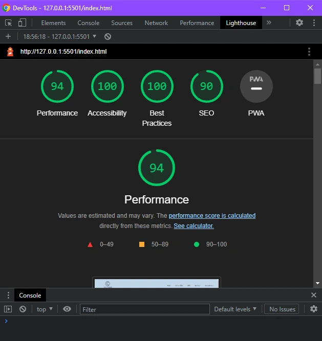
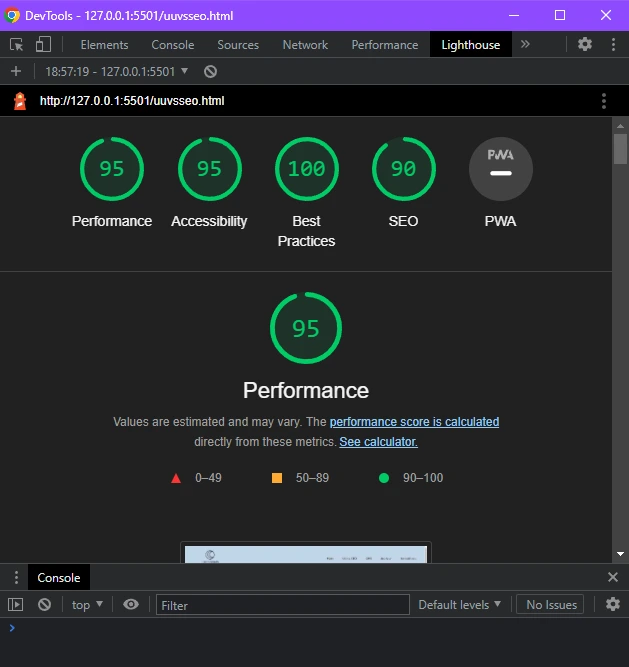
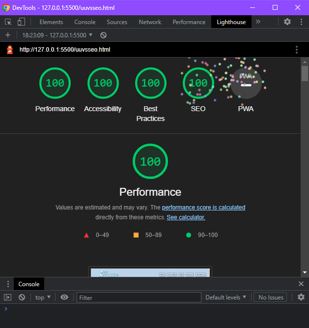
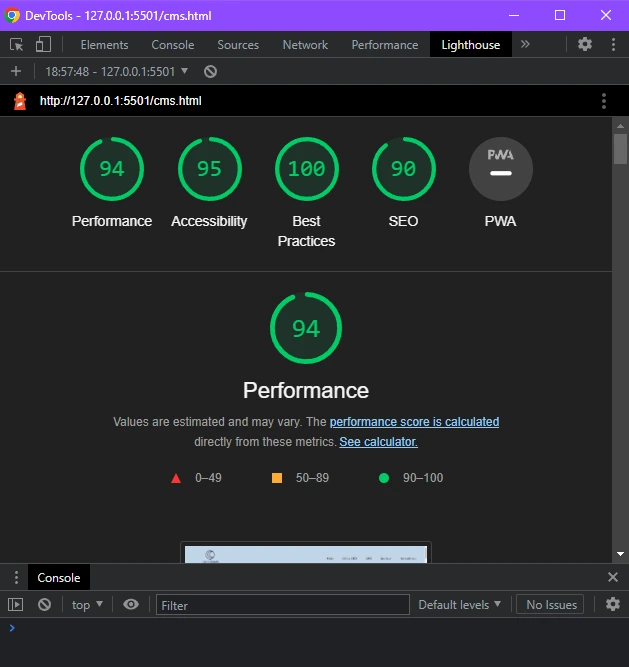
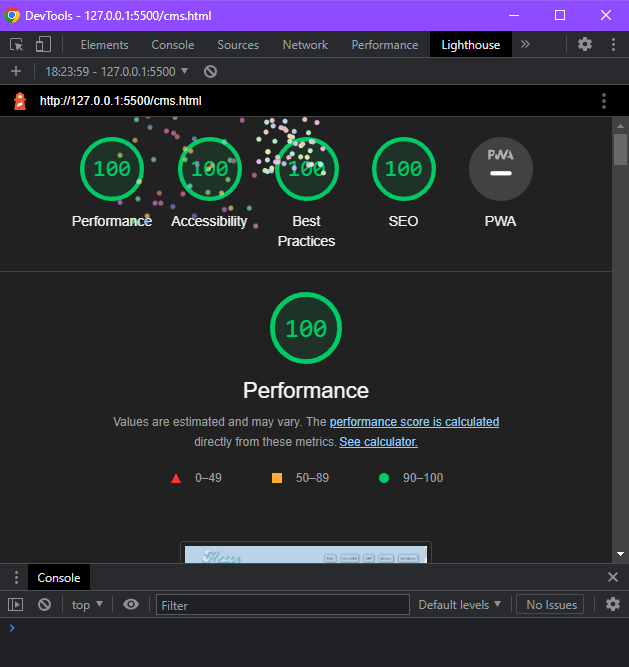
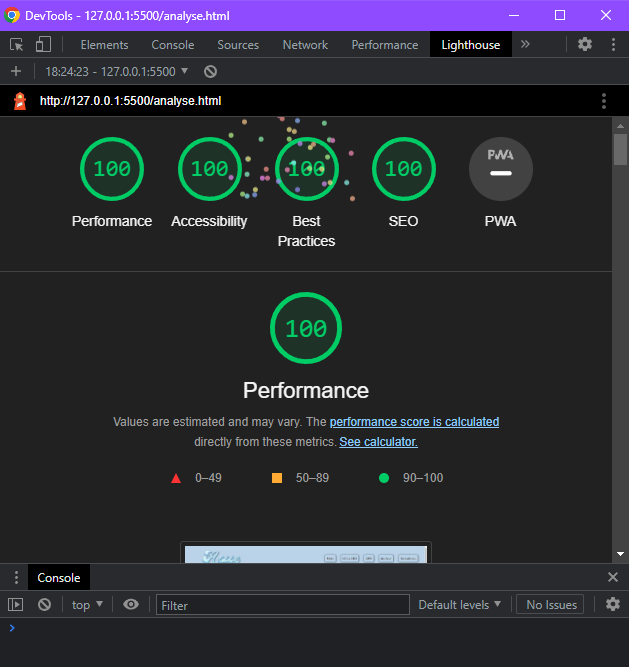
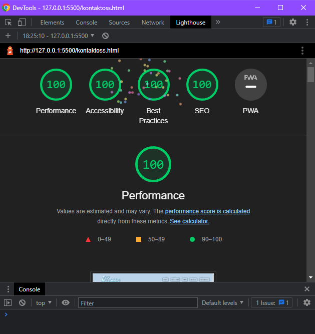

Hjemside Lighthouse score
Bilde over til venstre er Lighthouse Desktop FØR jeg endret og gjorde Performance, Accessibility, Best Practises og SEO bedre. Bildet over til høyre er ETTER jeg endret og gjorde de bedre. Dette gjelder også for de andre artiklene under.
Som man kan se, så var det ikke så mye å endre på. Jeg fokuserte mest på Accessibility og SEO, men siden Performance og Best Practises var så høy allerede var det ikke mye å fikse/endre på.
Det eneste som gjorde SEO dårligere var "Meta description", altså at dokumentet ikke hadde "Meta description". Dette var lett å fikse, og alt jeg trengte å gjøre var å sette inn meta-taggene i head.
Som f.eks. meta name = "description" content="Les om UU vs SEO, CMS & Analyse". Det var også noe som gjorde Performance dårligere som var ganske lett å fikse, og det var nemlig å konvertere png/jpg filer til webp format. Dette gjør at det blir lettere å loade inn på siden.
Opprinnelig hadde jeg fontawesome lagret i nettside mappen min. Dette hadde en stor innvirkning på Performance, så isteden for å ha alt lagret i mappen brukte jeg heller "script" linjen plassert i head som jeg fant på fontawesome sin side for å linke.


UU vs SEO Lighthouse score
På UU vs SEO siden var det heller ikke så mye å endre på. Man kan se at Accessibility blir litt dårligere, og feilen her var en kontrast feil.
Helt nederst på siden var det satt inn kilder, men tekst fargen og bakgrunnsfargen var en dårlig match. Bakgrunnsfargen og tekst fargen var begge mørke, mørkeblå og svart. Dette var lett å fikse, bare å endre på tekst fargen.


CMS Lighthouse score
På CMS siden var Lighthouse helt lik UU vs SEO siden. Jeg gjorde akkurat det samme for å gjøre Lighthouse poengsummen bedre. Altså fikse på kontrast feilen, konvertere png/jpg til webp og linke fontawesome på en annerledes måte.

Analyse Lighthouse score
På denne siden vi er på nå, Analyse siden var Lighthouse lik Hjemside Lighthouse poengsummen. SEO gikk til 100 siden vi allerede hadde fikset "meta description" feilen. Fontawesome hadde vi allerede fikset ved å linke det på en annerledes måte, som gjorde Performance mye bedre, også til slutt var det å konverte alle jpg/png bildene til webp.

Kontakt oss Lighthouse score
Helt til slutt var det Kontakt oss siden, som også hadde helt lik Lighthouse poengsum som Analyse. Alle feilene har vi allerede fikset på, som meta description, fontawesome linking og png/jpg til webp format. Dette fikk Lighthouse poengsummen til 100.
Tilgjengelighetserklæring
Tilgjengelighetserklæring har blitt fylt ut. Trykk HER for å åpne den!
AAA Krav (ikke i malen)
2.3.2 Tre glimt
AAA - Nettsiden har ikke innhold som glimter mer enn tre ganger i løpet av ett sekund.
1.4.6 Kontrast
AAA - All tekst på nettsiden har et kontrastforhold på minst 7:1.
2.4.10 Deloverskrifter
Deloverskrifter har blitt brukt til å organisere innholdet i seksjoner.
2.1.3 Tastatur
All funksjonalitet kan brukes kun med tastatur.